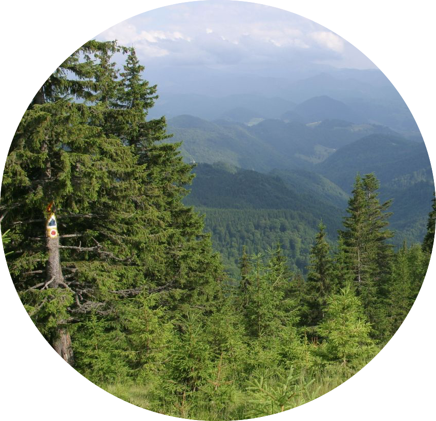

Forests
Tropical Rainforests
Tropical Rainforests are located near the equator, since that is where hot, moisture filled air is dumped. These forests have a year-round high moisture levels, uniformly warm temperature, and high rainfall. Tropical rainforests are dominated by broadleaf evergreen plants, which keep most of their leaves year-round. Tropical rainforests have very high net primary productivity, since there are many different species with lots of biological biodiversity. They cover only 2% of the Earth's > surface, but they contain at least half of the the earth's known terrestrial plant and animal species. Most of the nutrients are stored within the plants and not the soil since right as nutrients are released, they are taken up by the plants. Half of all tropical forests have been destroyed or disturbed by human activites for agricultural or urban development purposes.

Deciduous Rainforests
Deciduous Rainforests are located in aread with average temperatures that change dramatically between each season. This forest is dominated with broad-broadleaf deciduous trees like oak, hickory, and maple trees. The flora survives by dropping all of its leaves during the fall and then becoming dormant during the winter season. In this forest, there is a very slow rate of decomposition, so layers of leaf litter decay on the ground, holding much nutrients. Deciduous forests have been disturbed more than any other forest or biome in the world.
Coniferous Rainforests
Coniferous Rainforests are cold forests that are dominated by evergreen, coniferous trees such as spruce, fir, and cedar. Most of these plants have narrow leaves (needles) which helps the crops withstand the harsh, cold year-round temperatures. These forests are found south of the arctic tundra in Northern regions all around the world. There is very low plant and animal biodiversity because few species can survive the winters when the soil moisture freezes. A specific type of coniferous forest is a boreal forest, which is also called a taiga. Here is more information on taigas.
Deforestation
Forests currently cover 30% of the world's land area, but that number is dramatically decreasing. Forests are extremely important because they act as a carbon sink to help absorb carbon dioxide that humans exhale (and that we release in many different processes like smelting and mining) and also help absorb the heat that is produced during the greenhouse effect. Forests also hold a large majority of the species the Earth and have high biodiversity levels. The main causes of deforestation are clearing for farming, grazing of livestock, mining, drilling, forestry practices, wildfires, and urbanization.